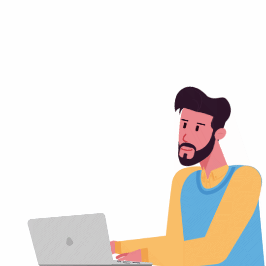

SOS StaySafe
Reporting Abuse
Even with all efforts to prevent it, abuse can still happen. It is the duty of SOS Children’s Villages to give you different ways to report, so that you can tell someone if you have experienced or witnessed abuse, or if you are worried that something might be wrong. You do not need to be sure or have proof before raising a concern. SOS Children’s Villages looks into every report it receives and responds with appropriate action.
Reporting process

English
Where can you report?
-
A trusted adult
Talk to an adult you trust, such as a parent, caregiver or teacher. They can help you make a report.
-
Your safeguarding person or team
Every SOS location and office has a safeguarding person or a safeguarding team. You can report any concern directly to them.
-
A safeguarding hotline
There should be a hotline you can call to report a concern. The number should be clearly displayed on posters at your SOS location.
-
Email
You can email your local child safeguarding team. The email address should be clearly displayed on posters at your SOS location.
-
The whistleblowing channel: SOS SpeakUp
The SOS Children’s Villages whistleblowing channel is a confidential reporting system. It allows you to report a concern without saying who you are.
Report Concern
Giving your name is your choice on SpeakUp
If you use the whistleblowing channel, you can choose whether or not to give your name. When you talk to someone directly, such as a trusted adult or your safeguarding team, they will know who you are. Every report is taken seriously, whether or not you give your name.
English
What happens after you report?
- Your report is received.
- A specially trained team looks at your report and assesses the information you shared.
- If they need to understand something better and you gave your contact details, they may contact you to ask more questions.
- They should also offer you support, such as the chance to talk to a counsellor or psychologist.
- Once they have checked all the details, they decide what the next steps should be.
Possible next steps include:
What happens next depends on each situation. Every report is taken seriously and handled by people who are trained to do this.
English
What if your report is not taken seriously?
If you don’t get a response to your report, feel it is not being taken seriously, or are unhappy with how it was handled or with the outcome, you can contact the Ombuds Office.
The Ombuds Office is independent of SOS Children’s Villages. The Ombuds is a friendly and trustworthy person who is good at listening and can help when things don’t seem to be working as they should – there to support and guide children and young people like you.
Contact the SOS Children’s Villages Ombuds Officeombuds-sos-childrensvillages.org
How children and young people can get involved in reporting and responding
You deserve to be heard.
If something has happened to you or someone else, speaking up is an important first step. You are not to blame for abuse. You deserve to be safe, listened to and supported.
REPORT A SAFETY CONCERNSOS SpeakUp · soscvi.speakup.report